Portfolio
This website contains my works in my college days, movies, writings, pictures and codings.
About
Takuya Hiraike
Soccer
小学生から高校3年生までサッカー部に所属。サッカーに限らずスポーツ全般、身体を動かすことが好き。
Camera
一眼レフで写真を撮影することが趣味。たまにカメラを持って旅行に出かける。動画の撮影・編集なども可能。
Engineer
エンジニアとして長期インターン中。主にPHPを使用して、Webサービスの改修を行う。競プロにも挑戦中。
Movie
"TOKYO STARTUP GATEWAY" PR Movie
Using Software
インターン生として、イベント集客のために約3ヶ月かけて撮影から編集まで1人で制作。主にFacebookにて投稿し、シェア40件・再生回数11,000回を達成。過去最多、最速の集客成果に貢献した。
Writings
2016/11～2017/07
インターン生として記事の取材、執筆、編集を行う。
主な記事：
「長距離選手に対する、一番の褒め言葉がなにかわかるか?」、ランナーの名作『風が強く吹いている』から学ぶこと

Pictures
2017/02
Sunset
小笠原諸島
2017/03
Kaminari-mon
浅草寺
2017/04
Sakura
小石川植物園
2017/03
Merry-go-round
よこはまコスモワールド
2016/11
Snow Bench
多摩川河川敷
2017/05
Cactus
道端